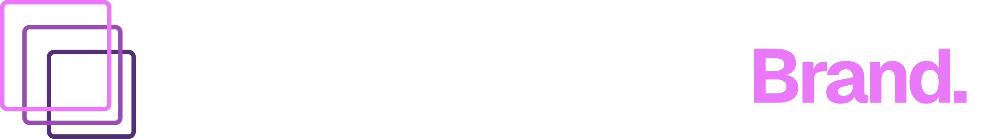

Edition
2026


AI is reshaping where destinations are discovered, how tourism is managed and how national bodies are led.
The question is not whether to engage. It is whether leadership is ready.
Replace with a sourced, citable data point. The stat slide is built for a single number plus one declarative sentence — never more.
The industry's most respected recognition of destination branding, transformation and digital innovation.

Places on the leadership day are by personal invitation only. To discuss participation, please get in touch.
Get in touch